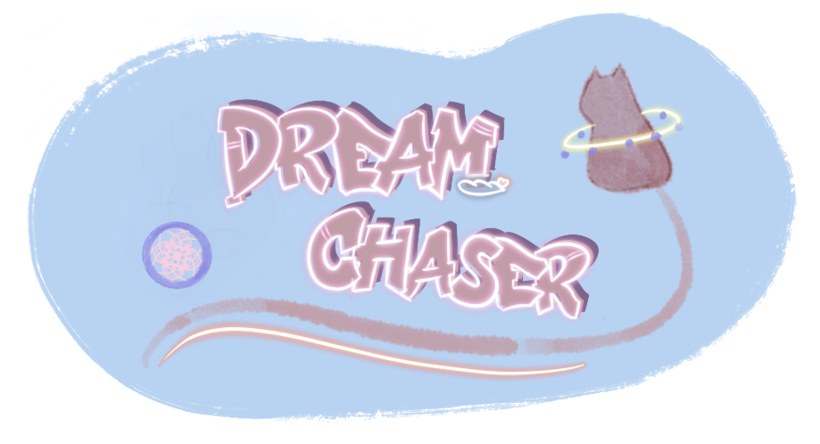
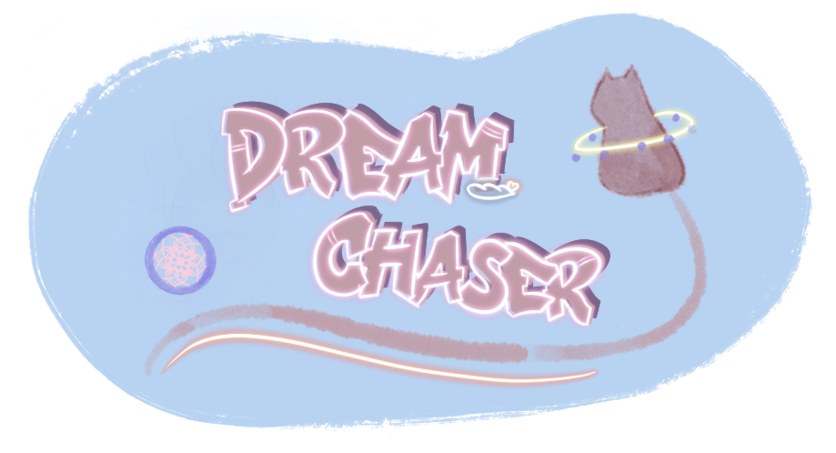

Portfolio 2023
Diana Yee
.gif) 


SCP Escape
Solo Project
Twine
2021


Capture of the game
Introduction
Fear often stems from the unknown, the disruption of norms, and concerns over uncontrollable events, which are all part of human survival instincts. In this game, players assume the role of a D-class member caught in a chaotic breakout, forced to confront various anti-human SCP entities. To safely escape, players must navigate through perilous shelters, interact with various SCP entities, make crucial decisions, and solve puzzles. My friend Zixin Ou and I co-designed this game based on the SCP universe.
Story Board
Special Thanks: Zixin Ou
Core Mechanic
The game employs a link navigation and dialogue choice system to guide players in interacting with SCP entities. Throughout the game, players will encounter numerous potentially harmful SCP entities, such as SCP 173, SCP 096, SCP 939, SCP 682, SCP 053, SCP 0294, SCP 035, SCP 073, SCP 953, SCP 847, SCP 860, and SCP 458. Players' choices will determine the game's outcome, leading to either successfully avoiding danger or facing unfavorable endings. This linked structure makes the game more dynamic, providing players with decision-making agency in survival scenarios.
Dream Chaser
Game Design, Character Design, Concept Design
Phaser
2022
Trisha Kopula - Level Designer, Map Designer, Narrative Design
Yiyang Lu - Lead Programmer, Game Design
Siyi Zhang - Programmer, Game Design
Diana Yee - Sprite Design, Concept Design, Game Design
Introduction
Nights, the profound darkness, intertwine with moods, bringing loneliness. Those who are plagued by nightmares, and trouble of sleep night after night, accompany this heavy solitude.
Dreams, are vessels of our emotions and memories, secret mirror that glimpses into the depths of the heart, offering another kind of illusory yet genuine life experience. We are ourselves or any creature in the universe of dreams. Through ever-changing perspectives, we explore forgotten memories and seek the true meaning of ourselves in life.
Core Mechanic
The core mechanics would include running, jumping, changing form, and collecting that allow players to travel around in the wonderland. The character will also be able to make a double jump move, allowing them to reach a higher place in the world. At each level, the character is required to collect all the memories scattered around the world to pass them on to the other world. Hence, the character will need to use a dreamcatcher to collect their memories and transform into a cat to recover the memories stuck in small areas. To pass each level, the player needs to collect all three memories.
Capture of the game
Level Design
In traditional Chinese culture, Zhou Gong's Dream Interpretation (周公解梦) is a custom that predicts fortune or misfortune based on individual dreams. Each scene in a dream symbolizes a specific hexagram.
In the first level, we see a blurry icy surface with a background that resembles a deep cave, reflecting the protagonist's confusion and isolation. According to Zhou Gong's Dream Interpretation, dreaming of ice suggests that soft water, after freezing, gains the ability to withstand pressure, symbolizing that you are about to receive care and support from the most crucial person in your life.
The theme of the second level is a jungle, with its color tones warmer than the first level, indicating that the protagonist is gradually moving in the right direction. Dreaming of a dense forest suggests that your life will experience normal fluctuations, implying that your life will progress along its regular path, hinting at a future of happiness and prosperity. Therefore, we chose green and yellow as the main colors to showcase the harmonious beauty of nature.
The third level represents a desert. Dreaming of a desert symbolizes that at this moment, you may feel lost. The imagery of the desert might prompt players to unveil deeper meanings or truths hidden beneath complex appearances. This level is the most challenging, intended to remind players that they are approaching the conclusion of the story.
Sprite design by Diana Yee
In the ancient legends of the Native Americans, when night falls, various dreams wander through the dark night. Sweet dreams breeze through, traversing the dream web and softly landing on the sleeping person. Nightmares, on the other hand, are captured by the Dream Catcher, waiting for the break of dawn when sunlight pierces through, causing them to dissipate. This ensures that people have peaceful nights, accompanied by sweet dreams. Thus, the player's weapon is the dreamcatcher, used to capture lost memories within dreams.
Cats hold unique symbolic meanings in cultures around the world, often seen as mysterious and independent beings. In Chinese culture, cats carry significant dual symbolism. Their nocturnal habits and independence are associated with connections to the underworld, and some even consider them representatives of evil forces. However, cats are also seen as symbols of "warding off evil" due to their excellent mouse-catching abilities. Beneath their adorable appearance, those deep, mysterious eyes seem to hide endless secrets. The protagonist in the game takes on the form of a cat in the dream world, reflecting the duality between reality and dreams.
The enemies in the game resemble ghosts with Medusa-like braids on their heads. Approaching them causes harm, and if repeatedly attacked, the player will be forever trapped in the dream, unable to wake up, leading to a failure in the game.
Splatoon Board Game
Game Designer, Artist
Board Game
2020
Playthrough illustration
Introduction
Dive into the intriguing realm of "Ink Mayhem," where the clash between the digital and analog worlds takes center stage. As a key contributor, I played a pivotal role in bridging these realms, focusing on the visual design elements that transition the digital concept into an engaging analog gaming experience. I take pride in my ability to bring the visual elements to life, seamlessly blending the digital and analog worlds.
Concept
"Ink Mayhem" revolves around the seamless fusion of digital innovation and analog gaming. This integration is evident in the visual design elements such as the rule book, logo, and cards, where the dynamic energy of the digital concept is skillfully translated into a captivating analog gameplay adventure. The game serves as a testament to the successful merger of these two realms, offering players an immersive experience that resonates with the essence of the digital-to-analog transition.
Card Design by Diana Yee
My contribution to "Ink Mayhem" was pivotal in bridging the realms of digital innovation and analog gaming. I took charge of crafting the visual design elements, including the rule book, logo, and cards, ensuring a seamless transition from the dynamic energy of the digital concept to a captivating analog gameplay adventure. Through meticulous attention to detail in layout design, color palettes, and typography, I aimed to evoke the essence of the digital world while maintaining a tangible, printed presence. Additionally, I structured the rule book to provide clarity and coherence in conveying the gameplay mechanics, breaking down complex concepts into digestible sections for players. The logo and cards became distinctive emblems of the game, embodying the clash of colors and strategies inherent in the digital-to-analog journey. Overall, my contributions aimed to enhance the overall gaming experience, immersing players as explorers in the captivating crossover of worlds within "Ink Mayhem."